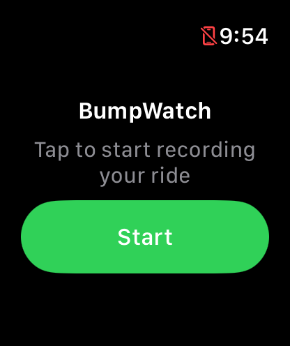
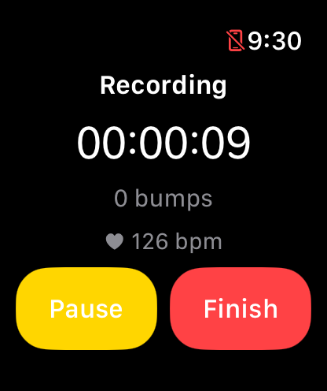

Community-sourced road data
Mapping busted bike lanes.
Every crack, pothole, and expansion joint that rattles you off your line adds up. BikeLaneBumps turns real rides — recorded straight off an Apple Watch — into a live heatmap, so the streets that actually need fixing stop being a guessing game.
See it on your wrist
Tap Start before you clip in, then forget about it — BumpWatch tracks GPS, bumps, and your heart rate for the whole ride, no phone required.


—
Bumps recorded
—
Rides logged
—
Worst bump on record
The heatmap
Warmer colors mean more bumps, and worse ones. Zoom in on your commute.
No bumps recorded yet — be the first to ride and put your street on the map.
How it works
-
01
Ride with the app running
The BumpWatch app tracks your ride's GPS location and reads your Watch's accelerometer the whole time — no phone required.
-
02
Bumps get flagged automatically
A sharp jolt above a set threshold gets logged with its exact location, its severity, and the time it happened.
-
03
It lands on the map, for everyone
When you finish your ride, your data uploads straight to this page's heatmap — anonymous, aggregated, and public.
Get the app
BumpWatch is a standalone Apple Watch app — it doesn't need your phone nearby once you're riding. It's live on the App Store now. Since it's watch-only, you won't find it by searching the regular App Store app on your iPhone — open the Watch app on your iPhone instead, go to its App Store tab, and search "BumpWatch" (or just tap the button below from your iPhone).